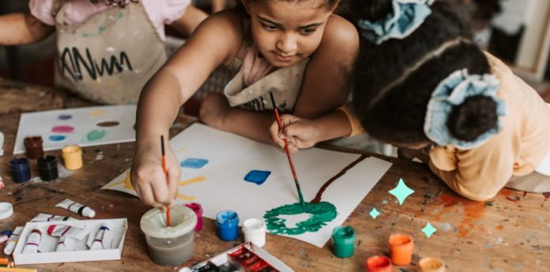
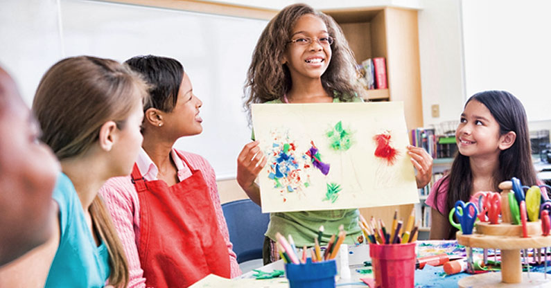
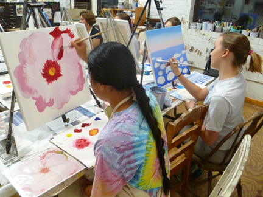

Get Your First FREE Lesson!
Click HERE...KIDS
4-7 years


CHILDREN
8-12 years
TEENAGERS
12-16 years

TEENAGERS
16-20 years
ADULTS
21+

Get Your First FREE Lesson!
Click HERE...At an individual master class in pottery, you immerse yourself in the world of pottery. A professional potter will tell you about the clay, its properties, and under his guidance, you will independently prepare the clay for work. Such master classes are most often attended with a close friend or girlfriend, the whole family. They also give a certificate for the holiday to those who wish to learn pottery.
Individual master classes are held in a relaxed atmosphere, which allows you and your friends to fully experience the finest moments of working with clay and learn what pottery is. In pottery, you will be assisted by an experienced craftsman who will not only give individual advice on clay modeling, but will also do everything to make your ceramic works become a home decoration.
Who is a private pottery lesson for?
-adults who are ready to bring their own ideas to life with the help of an experienced potter and learn what pottery is;
-children for whom an individual approach and a pleasant atmosphere are important;
-companies of friends who are interested in extraordinary leisure scenarios;
-lovers who want to increase the luggage of common impressions;
-colleagues who are looking for creative inspiration. In pottery you will be assisted by an experienced master who will not only give individual advice on clay modeling, but will do everything to make your ceramic works become home decoration.
4-7 years
8-12 years
12-16 years
16-20 years
21+